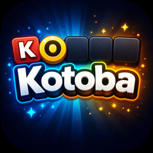
Kotoba
Devine le mot caché en six essais, en français et en japonais. Mot du jour, 240 niveaux d'aventure.
Dünyanın 1 numaralı GTA 6 geri sayımı: en doğru, en iyi görünümlü, en eksiksiz. Kendi saat diliminizde gece yarısına kadar geri sayarak son saniyeye kadar doğru.
Biliyor musun

Rockstar Games , 15 Ekim 2026. Müzik: Justice'den "Flower in a Hurricane", Tame Impala, SZA ve King Gizzard & The Lizard Wizard ile birlikte.

 YeniFragman 3 · Lansman, müzik Justice tarafından
YeniFragman 3 · Lansman, müzik Justice tarafından
 Kol saatiExtended Look · 27 dakikalık oynanış
Kol saatiExtended Look · 27 dakikalık oynanış
 Kol saatiFragman 2
Kol saatiFragman 2
 Kol saatiFragman 1
Kol saatiFragman 1
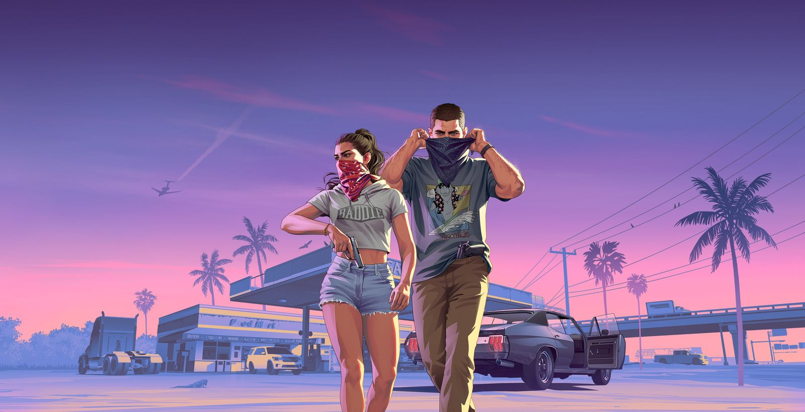
YeniGTA 6 müziği: altı istasyon, albüm, single'lar8 Ekim'de Açıklandı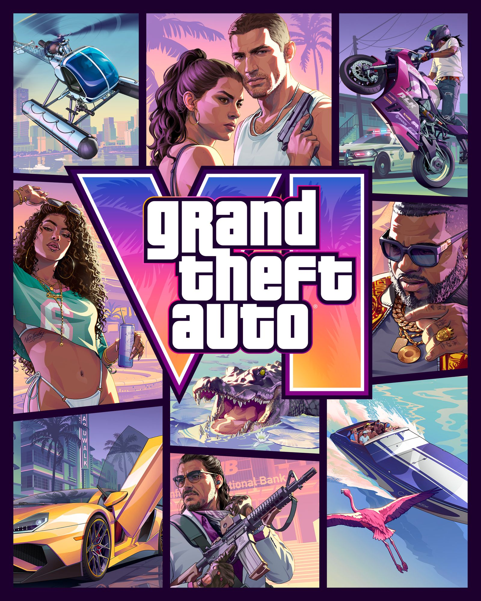
Ön sipariş79,99 ABD doları standart, 99,99 ABD doları Ultimate ve Vice City vintage paketiFiyat karşılaştırması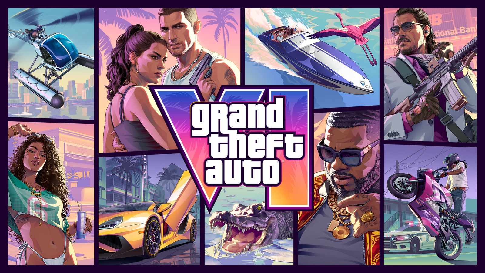
Rockstar StoreGTA VI koleksiyonu: tişörtler, kapaklar, Zippo, vinilFiyatlar her 30 dakikada bir yenilenir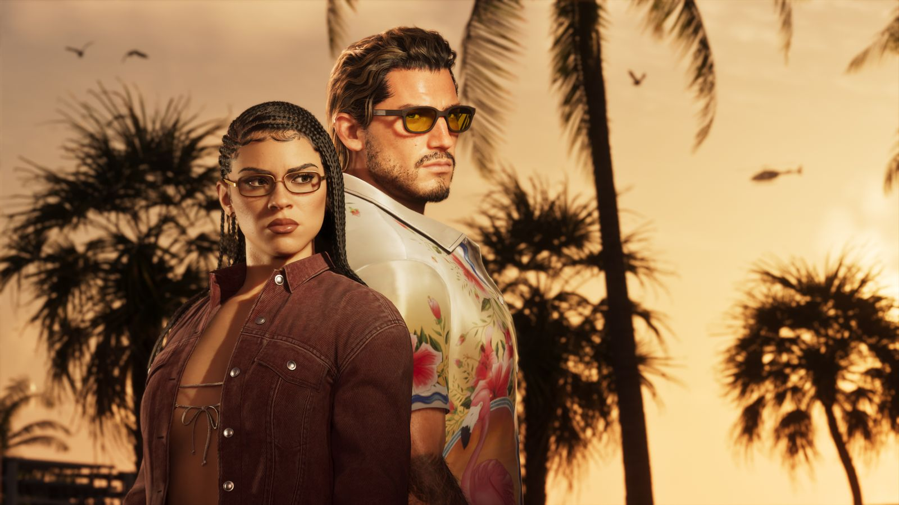
Koleksiyoncu kutusuThe Goodtime State , Vice City Koleksiyonu, 399,99 €Oyun dahil değildir, kişi başı bir adet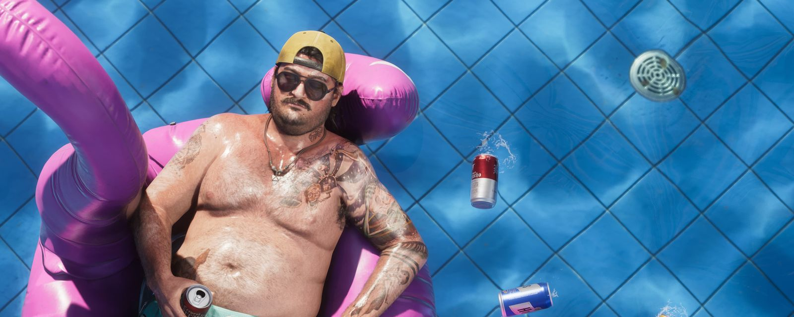
ToplumVice City Wall: hesapsız konuş, Discord'a katıl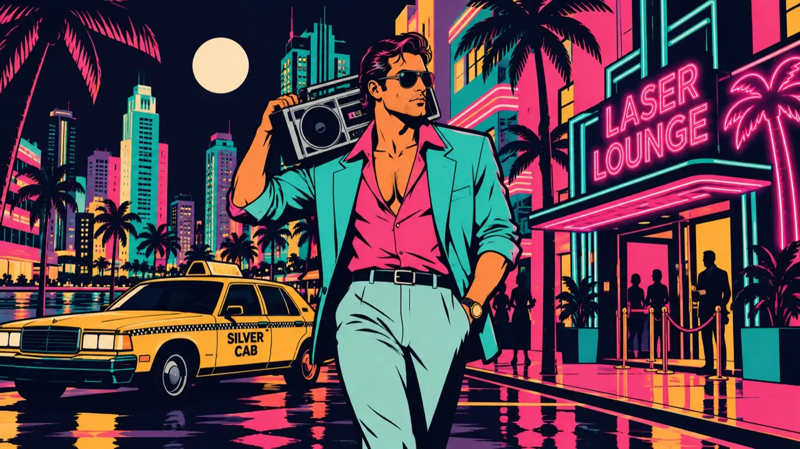
Vice BayVice Bay Radio , altı 1986 FM istasyonu, ücretsiz yayın


Amerika'nın en güneşli yeri ve karanlık tarafı. Dolaşmak için koca bir eyalet.
Hayatın onlara hiçbir şey vermeyeceğini her zaman biliyorlardı. Hayatta kalmak için birbirlerine güvenmek zorunda kalacaklar.
27 Ağustos 2026'da Rockstar şimdiye kadar gösterdiği en uzun demo. Sürüş, dövüş, radyo, hepsi.
PS5 ve Xbox Series X|S çıktı. Burada: yerel kilit açma süreniz, canlı haberler ve topluluk.
ÇıkışGerçek Rockstar Games videoları, 4K, resmi kanalından. Başka bir şey yok, sahte de yok.
1986 Vice Bay'inden altı FM istasyonu. Synthwave, chiptune, salsa, slow jam ve caz; sunucular ve jinglelar da var. Beklemenin tam sesi.
Musique libre CC BY · Animateurs et jingles OKALAM Studio · vicebayradio.com · Instagram @vicebayradio
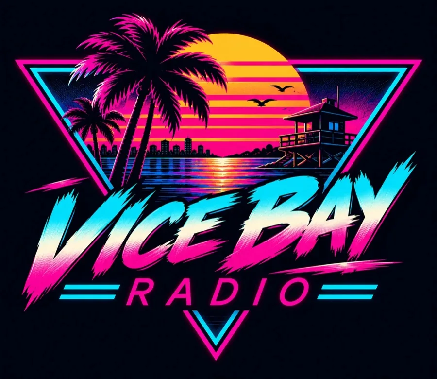
Yakında iPhone ve Android'deiOS · Android · OKALAM Studio
Neon tuğla kırma oyunumuz. Vice Bay boyunca 100 seviye, patronlar, güçlendirmeler ve arkada çalan radyo. 19 Kasım 2026'da, GTA 6 ile aynı gün çıkıyor.
Çıkış: 19 Kasım 2026, ilk gün
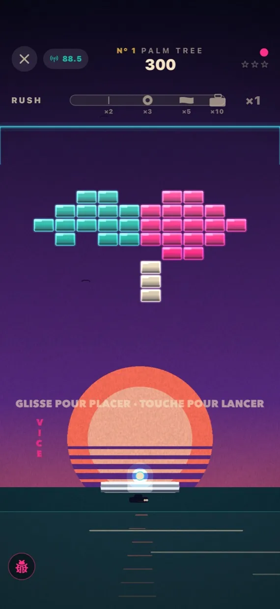
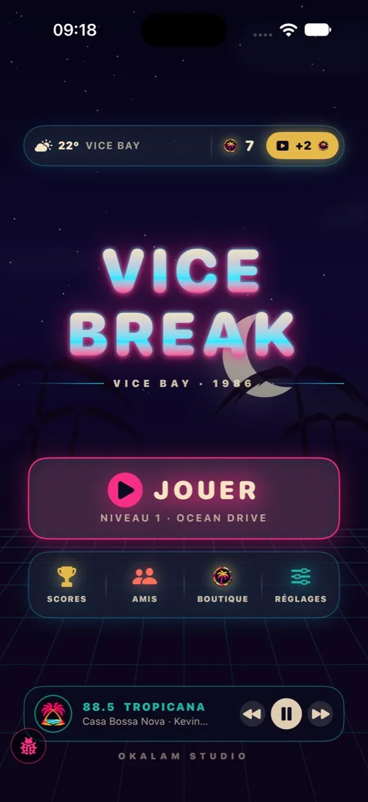
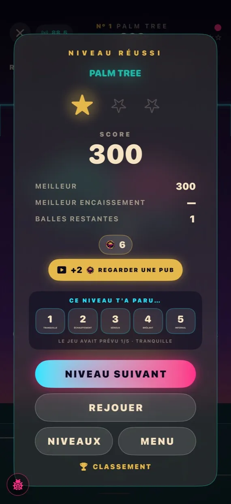
Plajdan gökdelenlere, Vice Bay'in her bölgesinin kendi tuğlaları, tuzakları ve patronu var.
Altı istasyonun hepsi arka planda çalar. Oyundan çıkmadan frekans değiştir.
Synthwave güneşi, camgöbeği ızgara, eflatun ve altın. Vice City'nin altın çağına utanmadan bir saygı duruşu.
Reklamlarla finanse edilir, küçük bir bonus mağazası var. Seviyeler sırasında reklam yok.
OKALAM Studio · gratuites · iOS et Android

Devine le mot caché en six essais, en français et en japonais. Mot du jour, 240 niveaux d'aventure.
Chaque jour une question A ou B. Vote, compare avec tes amis et avec le monde.
Le casse-briques néon de Vice Bay. Sortie le 19 novembre 2026, le même jour que GTA 6.
Du même studio que cette radio : OKALAM Studio.
Vice Bay Radio'nun Instagram'ı: GTA 6 görselleri, Vice Break kamera arkası, memler ve yazı işlerinin hikâyeleri. Bizi takip edin, her şey orada başlar.
@vicebayradio
Vice Bay'i Instagram'da takip etÖnce Rockstar'ın resmi duyuruları, sonra dünya basını kendi dilinde. Günde gerçek zamanlı, her dakika otomatik güncellenir.
Canlı · Güncellendi
 Bildirildi 2026-10-28GTA 6: Justice score listing points to 50 tracks and a December 11 release
Bildirildi 2026-10-28GTA 6: Justice score listing points to 50 tracks and a December 11 releasePress reports identify a separate Original Score listing on Apple Music, with two tracks available to preview.
 Bildirildi 2026-10-28GTA 6: GTA V and San Andreas actors share advice for the next leads
Bildirildi 2026-10-28GTA 6: GTA V and San Andreas actors share advice for the next leadsThe veterans discuss Rockstar’s guidance and the lasting connection between performers and fans.
 Bildirildi 2026-10-28GTA 6 sürüşü: GTA V daha dar yollar ve daha yoğun trafik
Bildirildi 2026-10-28GTA 6 sürüşü: GTA V daha dar yollar ve daha yoğun trafikRockstar , GTA V göre daha dar yolların ve daha yoğun trafiğin sürüşü daha gerçekçi ama daha az bağışlayıcı hale getirdiğini doğruladı.
 Bildirildi 2026-10-28GTA 6 tarzı kontrolörler: GameSir Sunset Boulevard ve Ocean Breeze G7 Pro
Bildirildi 2026-10-28GTA 6 tarzı kontrolörler: GameSir Sunset Boulevard ve Ocean Breeze G7 ProGameSir, Kasım ayında gelecek, Rockstar lisansı olmayan, GTA 6 benzeyen iki G7 Pro kontrol cihazı için ön siparişleri açtı.
GTA 6 videoları bugün tüm kanallarda yayınlandı. Her saat başı yenilenir.
نريد GTA VI بالعربية
Arap dünyasından milyonlarca oyuncu GTA 6'nın Arapça sürümünü istiyor. Rockstar resmi bir Arapça kanal açtı ama Arapça, 13 çıkış dili arasında yok. Bu site Arapçaya çevrildi ve onların talebini duyuruyoruz.
ملايين اللاعبين العرب يستحقون لعب GTA VI بلغتهم. هذا الموقع معكم: مترجم بالكامل إلى العربية، ويرفع صوتكم إلى Rockstar.
Leonida eyaletine ve Miami'den esinlenen efsanevi şehrine dönüş: plajlar, neon, bataklıklar ve kaos.
Serinin oynanabilir ilk ikilisi, Bonnie ve Clyde tarzında. Lucia, modern bir GTA'nın ilk kadın başrolü.
Önce konsollar. PC sürümü GTA V gibi sonra geliyor.
Standard 79,99 $, Ultimate 99,99 $. Ön siparişler 25 Haziran 2026'dan beri açık, Vintage Vice City Pack bonusuyla.
Bilgiler şu tarihte doğrulandı 7 octobre 2026 · İncil · SSS · Doğru mu yanlış mı · API JSON
Geri sayım bitti ama site devam ediyor: rehberler, hileler, harita ve yolculuk için radyo.